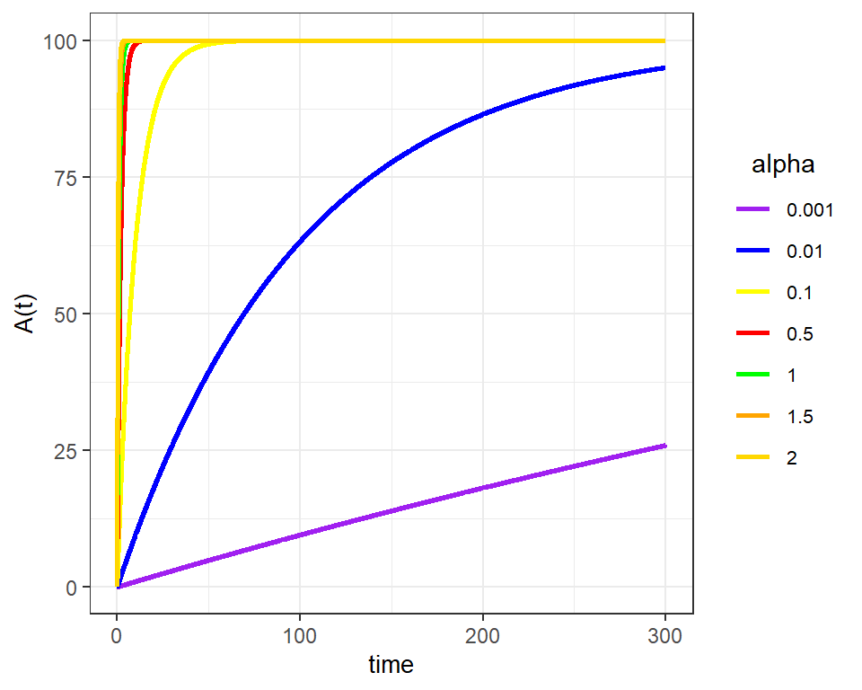

## -- Attaching packages ---------------------------------------------------- tidyverse 1.2.1 --## v ggplot2 3.2.1 v purrr 0.3.2
## v tibble 2.1.3 v dplyr 0.8.3
## v tidyr 1.0.0 v stringr 1.4.0
## v readr 1.3.1 v forcats 0.4.0## -- Conflicts ------------------------------------------------------- tidyverse_conflicts() --
## x dplyr::filter() masks stats::filter()
## x dplyr::lag() masks stats::lag()In this chapter we analyse the forms in which different types of spreading phenomena occur in networks. At a first stage we need to understand that different processes will occur in different contextual networks and for this we need to make the distinction bewteen explicit and implicit implicit networks:
An explicit network, also known as emic networks, which is given when the members of the network know that they belong to the network and they understand who they other members are. The diffusion processes that can appear in this network are herd behaviour, when the information is global, or information cascades, when the information is local.
An implicit network, also known as etic networks, which is given when the members do not know that they belong to the network. An example of this type of network are the communities we found in the previous chapter. The diffusion processes that we can find in this type of networks are the diffusion of innovations and the epidemics
In 1916, the surgeon Wilfred Trotter, described for the first time what we understand as herd behaviour, which occurs when a group of individuals perform actions that are aligned without any prior plannification.
Note that this is not the usual behaviour that appears under social or peer pressure, since in this case we expect a conscious decision based on inference. Specifically, the herd behaviour appears when the crowd intelligence is taken as trustworthy.
The conditions for this behaviour are
implicit to them there is the requirement that the network between the individuals is almost complete, since the nodes must be able to infer information from almost all the other nodes.
This type of behaviour can be easily modelized using Bayes formula. To see how, let’s consider the following classical example by Anderson and Holt:
In a large class of students, there is an urn with three marbles, either blue or red and we are guaranteed that there is at least one of each color, so combinations are either BBR or BRR. The students have to guess the right combination
The experiment is designed so that it satisfies all the requirements of a herd behaviour:
How do we analyse this procedure from the Bayesian prespective? The steps are the following:
\[\begin{equation} P(mR)=P(mB)=\frac{1}{2}, \quad P(R|mR) = P(B|mB) = \frac{2}{3} \end{equation}\]
\[\begin{equation} P(mB|B)=\frac{2}{3}, P(mR|B)=\frac{1}{3} \end{equation}\]
which should lead the student to declare majority of Blue. The rest of the students may infer that the student picked a Blue marble.
For the second student the argument goes the same. Let’s assume again that he picks blue, then he will choose blue since
\[\begin{equation} P(mB|B\cap B) = \frac{4}{5}, \quad P(mR|B\cap B) = \frac{1}{5} \end{equation}\]
if, on the other hand he picks red, we have
\[\begin{equation} P(mB|B\cap R) = \frac{1}{2}, \quad P(mR|B\cap R) = \frac{1}{2} \end{equation}\]
then, as before if she picks a blue marble, she will choose blue and any of the combinations if she picks a red marble. Let’s assume she picks blue (otherwise the argument just gets delayed)
The herd behaviour appears already in the third student! In this case it does not really matter what marble she picks, with the inference she can make from the other two students choosing blue, it is difficult that she may choose different from majority Blue. Even in the case that she obtains a red marble, the probabilities are
\[\begin{equation} P(mB|B\cap B\cap R) = \frac{2}{3},\quad P(mR|B\cap B\cap R) = \frac{1}{3} \end{equation}\]
This simple model ilustrates that under reasonable assumptions, the herd behaviour can be modelized by the usual Bayes formula. But it also let us see how we may break this behaviour: as soon as there is any kind of intervention, for example, we write the observations next to the predictions made, the behaviour breaks.
A cascade differs from a herd behaviour in a very basic property: the information is received from the neighbors in the network, then we need an explicit and non-complete network. Formally we define the cascade as the process where information flows through
Cascades appear in many different contexts: rumors or memes in social media, fires in forests, financial crisis, DDoS attacks on the internet or Power Grid Blackouts are some of the cases in which we need to understand the cascade and how to stop or push it.
Due to limitations of the course we cannot go into these processes with the depth they deserve, in any case, there is one exercise where you can begin to explore the deep meaning of cascades and cascades failures.
Following Rogers, we define an innovation as an idea, practise or object that is perceived as new by an individual or other unit of adoption. As we know, innovations occur regularly in any social context but not all of them are adopted (in fact most of them are not).
The following theory tries to give an answer to how and why an innovation is adopted. As a general definition, the innovations must be highly visible, should give a relative advantage over previous methods, must be compatible with the sociocultural structure and should not be highly complex.
A rather common description of the adopters is based on the work of Ryan and Gross where they identified, as a function of time, five different scales of adopters: innovators (2.5%), early adopters (13.5%), early majority (34%), late majority (34%) and laggards (16%), which gives a usual S-shaped curve in the cumulative amount of adopters.
In a model by Katz, he developed a two-stages process where the imformation is delivered from the mass (social) media into the opinion leaders who act like hubs for other members of their communities. While Rogers describes a five-step processes: awareness, interest, evaluation, trial and adoption.
The next section gives a quantitative form to these ideas in terms of models for the diffusion of innovations.
The main quantity we need to know is that of the number (proportion) of users that adopt the innovation. Then, in general we can define a that incorporates the basic elements as
\[\begin{equation} \frac{dA(t)}{dt} = i(t)\left[ P - A(t)\right] \end{equation}\]
where:
\[\begin{equation} A(t)=\int_0^t a(t)dt \end{equation}\]
the the equation above describes that the variation in the number of adopters is proportional to the number of users who have not adopted the innovation yet, being the proportionality the coefficient of diffusion.
This coefficient is commonly defined as a linear combination of the cumulative adopters at time \(t\)
\[\begin{equation} i(t)=\alpha + \sum_{i=t_0}^t \alpha_iA(i) \end{equation}\]
in particular if we can find three different models:
\[\begin{equation} i(t) = \alpha \end{equation}\]
\[\begin{equation} i(t) = \beta\, A(t) \end{equation}\]
\[\begin{equation} i(t) = \alpha + \beta\, A(t) \end{equation}\]
In this context we denote \(\alpha\) as the innovation coefficient and \(\beta\) as the imitation coefficient (sometimes this last is normalized by dividing it by \(P\))

If we solve the differential equation with the boundary condition \(A(t=0)=0\), we obtain
\[\begin{equation} A(t)=P(1-e^{-\alpha t}) \end{equation}\]
the graph shows the solutions when the innovation coefficient takes values in \([0.001, 0.01, 0.1, 0.5, 1, 1.5, 2]\) for a total population of possible adopters of 100.
Note that we can always write the solution in terms of the ratio of cumulative adopters by just defining by \(P\).
\[\begin{equation} \alpha(t)=1-e^{-\alpha t} \end{equation}\]
where we have use \(\alpha(t)\) instead of the usual lowercase \(a(t)\) not to confuse it with the function \(a(t)\) of adopters at time t.